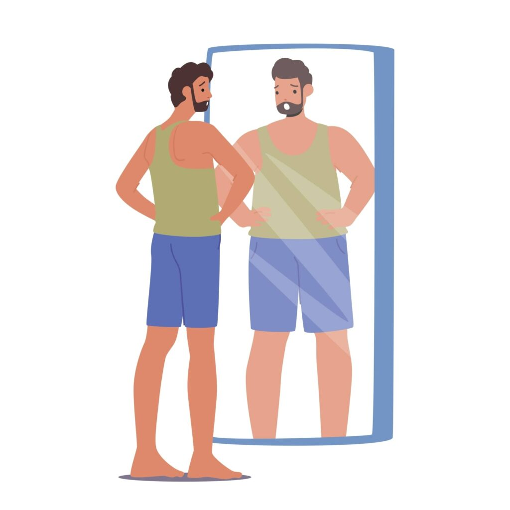

By Joseph Zou · Summer 2025

The gym has always been part of my routine. It is where I go to train, clear my head, and give structure to my days. Over the years, it became a space tied closely to discipline and consistency, something I could control even when other parts of life felt uncertain. This past summer, though, something shifted. I was lifting regularly, eating well, and staying consistent in ways I had not before. On paper, everything looked like progress.
Mentally, it felt heavier than ever. The more disciplined I became, the harder it was to feel satisfied with my body. Instead of confidence, progress brought a sharper eye for flaws. Each improvement seemed to expose something new that needed fixing. What I expected to feel like momentum started to feel like pressure, and I did not immediately understand why.
I began noticing how often my attention drifted away from what I was doing and toward how I looked. Between sets, I would catch my reflection in the mirror and instinctively evaluate it. My shoulders did not look wide enough. My waist looked softer than I wanted under certain lighting. Even on days when training felt strong, there was always something to critique. Progress did not bring relief. It only raised the standard.
That realization became impossible to ignore during the summer of 2025. With fewer academic obligations, my days revolved around training, recovery, and filling downtime. Social media became a constant presence, something I checked between sets, after meals, and late at night. My feeds were filled with fitness influencers, transformation posts, and carefully framed physiques that represented the extreme end of what progress could look like.
I knew those images were selective and curated. I understood that lighting, angles, editing, and genetics played a role. Still, that knowledge did not stop the comparisons from happening. I would leave the gym feeling accomplished, open my phone, and feel smaller within seconds. The contrast was jarring, and over time it became routine.
What surprised me most was how subtle the shift was. There was no single moment where I felt bad about my body. It accumulated quietly through repetition. Each comparison felt harmless on its own, but together they shaped how I saw myself. My internal reference point kept moving, and I was always slightly behind it.
Even on days when I hit personal bests, the satisfaction faded quickly. Compliments from others felt temporary, almost uncomfortable. I noticed how often I dismissed positive feedback or mentally explained it away. What mattered most was not what I had achieved, but what still felt missing.
The gym was still a place I enjoyed, but it had also become a place where I felt exposed. Mirrors were everywhere. Comparisons were constant, both external and internal. It was no longer just about training or performance. It was about how I thought I should look while doing it, and how closely I matched an image I never quite reached.
What helped was stepping back and naming the pattern without immediately trying to fix it. I realized my relationship with fitness had slowly shifted from self improvement to self surveillance. I was tracking workouts, meals, and progress photos, but rarely checking in with how I actually felt.
Once I noticed that, I made small adjustments. I put my phone away more often at the gym. I focused on performance and consistency rather than appearance. I reminded myself that bodies change unevenly and that progress does not always look dramatic. None of this solved everything, but it softened the constant noise.
Sitting with these thoughts made me curious about whether others experienced the same tension. The quiet dissatisfaction. The feeling of doing everything right and still coming up short. That curiosity pushed me to look beyond my own experience.
I began designing a project centered on gym habits, social media use, and body satisfaction. I wanted to see whether the patterns I felt internally appeared in data as well. As responses came in and the analysis took shape, the results felt familiar in a way I did not expect. Many people described the same contradictions using different words.
If you are interested in the full analysis, including the models, clustering, and results, you can read more about the Body Image and Gym Culture project on my website. This essay captures the experience that started it. The project captures what I learned when I stepped back and looked at it more closely.